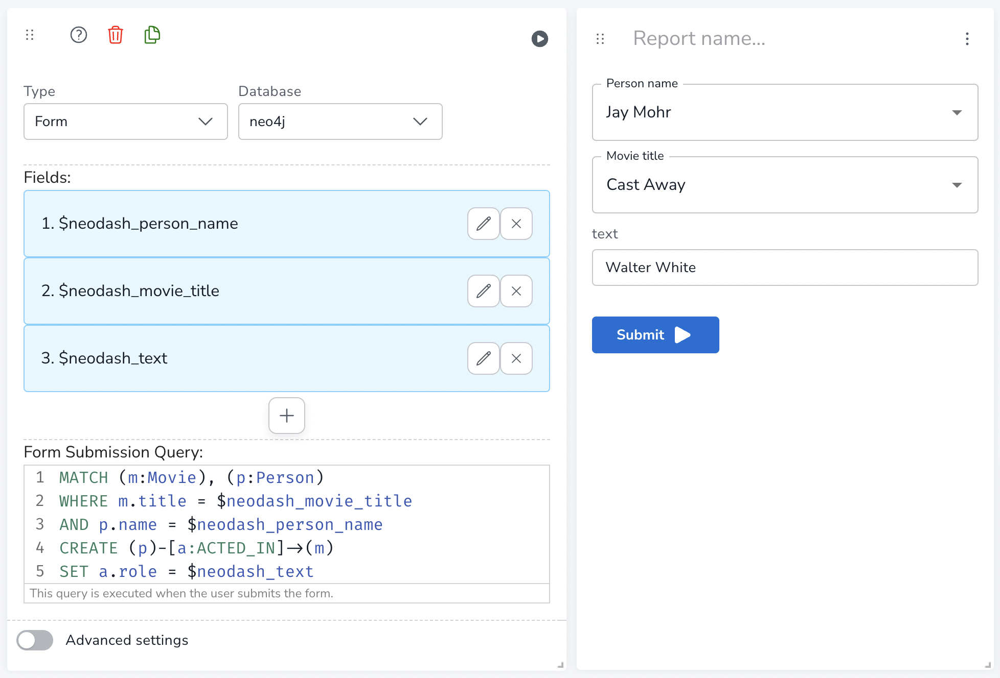
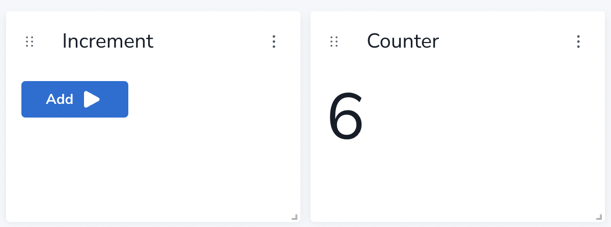

Form
|
This documentation pertains to the (legacy) unsupported version of NeoDash. For users of the supported NeoDash offering, refer to NeoDash commercial. |
A form is a special type of report that lets users run predefined, parameterized queries. A single form can consist of:
-
Zero or more parameter selectors.
-
A button that triggers submitting the form.
When creating a form, you write the Cypher query that is called when the submit button is clicked. This query can then use the parameters specified as input. The image below provides an example of a form. On the left, the settings used to define the form, on the right, the final form as visible to the user.

Examples
Simple Button
A form without parameters is a button that runs a specified query. One or more buttons can be used to perform simple operations in the graph. Below is an example of a simple button form. On submitting, the following query is executed:
MERGE (c:Counter)
SET c.count = c.count+1
Advanced Settings
| Name | Type | Default Value | Description |
|---|---|---|---|
Form Button Text |
text |
Submit |
Text displayed on the button that submits the form. |
Reset Button Text |
text |
Reset Form |
Text displayed on the button that resets the form to data entry mode. |
Confirmation Message |
multiline text |
Form submitted. |
Text displayed to the user after the form is submitted successfully. |
Clear parameters after submit |
on/off |
on |
Clears all dashboard parameters in the form after submitting. |
Has Submit Button |
on/off |
on |
When enabled, lets the user submit the form with a button. Disabling turns the form into parameters-only mode. |
Has Reset Button |
on/off |
on |
When enabled, lets the user reset the form to enter more data. |
Has Submit Message |
on/off |
on |
When enabled, the user to a seperate screen after submitting the form. Else, always stay in data-entry mode. |
Report Description |
markdown text |
When specified, adds another button the report header that opens a pop-up. This pop-up contains the rendered markdown from this setting. |